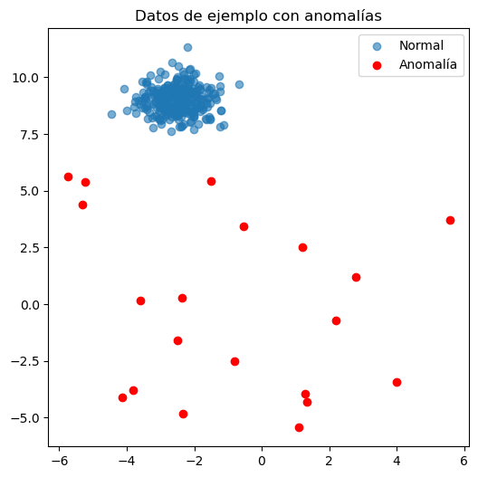
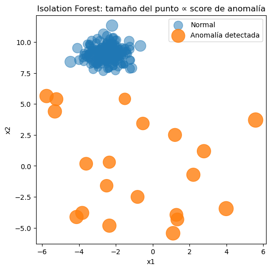
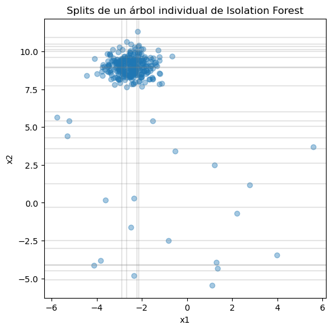
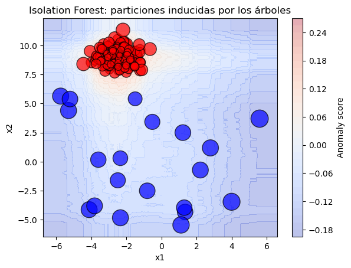

Isolation Forest#
Los bósques de aislamiento aplican el algoritmo de entrenamiento de los árboles de decisión para identificar muestras atípicas, por lo que se utilizan en problemas de clasificación de una clase y en aplicaciones como las que hemos discutido en clase:
Fraude financiero
Tráfico de red malicioso
Detección de anomalías
Intuición#
La forma más básica de construir un clasificador de una clase es utilizar un modelo de densidad de probabilidad sobre las muestras conocidas y definir un umbral a partir del cual una muestra tienen baja verosimilitud de pertenecer a la clase conocida.
A diferencia de esta aproximación el algoritmo usado por los bosques de aislamiento parte de la premisa de que las muestras anomálas son más fácil separar del restos de las muestras en el conjunto de datos. Para separar una muestra, el algoritmo genera particiones de manera recursiva seleccionando aleatoriamente una variable y un umbral entre el valor máximo y el valor mínimo de dicha variable en el conjunto de datos. Una vez realizado este procedimiento múltiples veces, el algoritmo mide cuántas particiones se necesitan para aislar un punto:
Puntos normales → requieren muchas divisiones
Anomalías → quedan aisladas con pocas divisiones
Ejemplo:#
import numpy as np
import pandas as pd
import matplotlib.pyplot as plt
from sklearn.ensemble import IsolationForest
from sklearn.datasets import make_blobs
# Semilla para reproducibilidad
np.random.seed(42)
# Datos normales
X_normal, _ = make_blobs(
n_samples=300,
centers=1,
cluster_std=0.6,
random_state=42
)
# Anomalías
X_anomalies = np.random.uniform(
low=-6,
high=6,
size=(20, 2)
)
# Dataset final
X = np.vstack([X_normal, X_anomalies])
plt.figure(figsize=(6, 6))
plt.scatter(X_normal[:, 0], X_normal[:, 1], label="Normal", alpha=0.6)
plt.scatter(X_anomalies[:, 0], X_anomalies[:, 1], label="Anomalía", color="red")
plt.legend()
plt.title("Datos de ejemplo con anomalías")
plt.show()

#Entrenamiento del modelo
iso_forest = IsolationForest(
n_estimators=100,
contamination=0.06, # proporción esperada de anomalías
random_state=42
)
iso_forest.fit(X)
IsolationForest(contamination=0.06, random_state=42)In a Jupyter environment, please rerun this cell to show the HTML representation or trust the notebook.
On GitHub, the HTML representation is unable to render, please try loading this page with nbviewer.org.
Parameters
Visualización de resultados#
#Detección de anomalías y visualización
y_pred = iso_forest.predict(X)
df = pd.DataFrame(X, columns=["x1", "x2"])
df["anomalía"] = y_pred
scores = iso_forest.decision_function(X)
# Invertimos el score para que valores altos = más anómalo
anomaly_strength = -scores
# Normalizamos a un rango razonable para tamaños
sizes = 50 + 400 * (anomaly_strength - anomaly_strength.min()) / (
anomaly_strength.max() - anomaly_strength.min()
)
df["anomaly_strength"] = anomaly_strength
df["size"] = sizes
plt.figure(figsize=(6, 6))
# Puntos normales
plt.scatter(
df[df["anomalía"] == 1]["x1"],
df[df["anomalía"] == 1]["x2"],
s=df[df["anomalía"] == 1]["size"],
alpha=0.5,
label="Normal"
)
# Anomalías
plt.scatter(
df[df["anomalía"] == -1]["x1"],
df[df["anomalía"] == -1]["x2"],
s=df[df["anomalía"] == -1]["size"],
alpha=0.8,
label="Anomalía detectada"
)
plt.legend()
plt.title("Isolation Forest: tamaño del punto ∝ score de anomalía")
plt.xlabel("x1")
plt.ylabel("x2")
plt.show()

La puntuación se obtiene calculando el promedio de las longitudes de la ruta para aislar una muestra y normalizando para mantener el valor en un rango controlado.
Veamos las particiones de un árbol#
tree = iso_forest.estimators_[0].tree_
def extract_splits(tree, feature_names):
splits = []
for i in range(tree.node_count):
if tree.children_left[i] != tree.children_right[i]:
splits.append((
feature_names[tree.feature[i]],
tree.threshold[i]
))
return splits
splits = extract_splits(tree, ["x1", "x2"])
splits[:10]
[('x2', np.float64(2.6160677216779575)),
('x2', np.float64(1.2722108136430457)),
('x2', np.float64(-4.499192213976394)),
('x2', np.float64(-5.11136831436573)),
('x2', np.float64(-2.5045818310405057)),
('x2', np.float64(-3.0037661863859872)),
('x2', np.float64(-4.1433096722024825)),
('x2', np.float64(-4.084328846732161)),
('x1', np.float64(-2.8978119467113843)),
('x2', np.float64(-0.28484234159877153))]
plt.figure(figsize=(6, 6))
plt.scatter(X[:, 0], X[:, 1], alpha=0.4)
for feature, threshold in splits:
if feature == "x1":
plt.axvline(threshold, color="gray", alpha=0.2)
else:
plt.axhline(threshold, color="gray", alpha=0.2)
plt.title("Splits de un árbol individual de Isolation Forest")
plt.xlabel("x1")
plt.ylabel("x2")
plt.show()

Veamos el modelo de anomaly score resultante#
# Definimos el espacio
xx, yy = np.meshgrid(
np.linspace(X[:, 0].min() - 1, X[:, 0].max() + 1, 300),
np.linspace(X[:, 1].min() - 1, X[:, 1].max() + 1, 300)
)
grid = np.c_[xx.ravel(), yy.ravel()]
grid_scores = iso_forest.decision_function(grid)
grid_scores = grid_scores.reshape(xx.shape)
### plt.figure(figsize=(7, 7))
# Contornos = regiones inducidas por los splits
contour = plt.contourf(
xx, yy,
grid_scores,
levels=30,
cmap="coolwarm",
alpha=0.35
)
plt.colorbar(contour, label="Anomaly score")
# Datos
plt.scatter(
df["x1"],
df["x2"],
s=df["size"],
c=df["anomalía"],
cmap="bwr",
edgecolor="k",
alpha=0.7
)
plt.title("Isolation Forest: particiones inducidas por los árboles")
plt.xlabel("x1")
plt.ylabel("x2")
plt.show()
